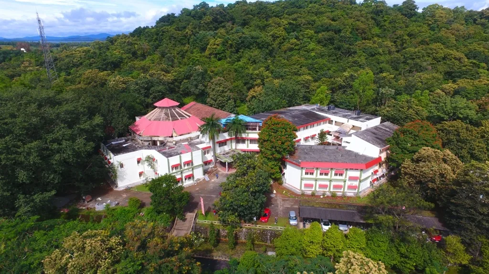
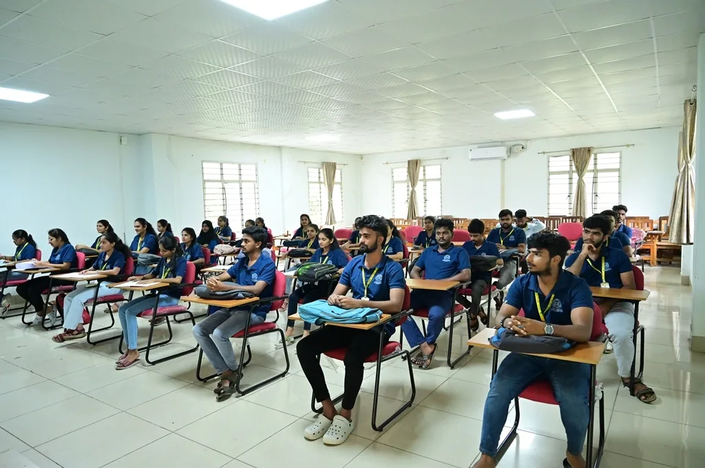
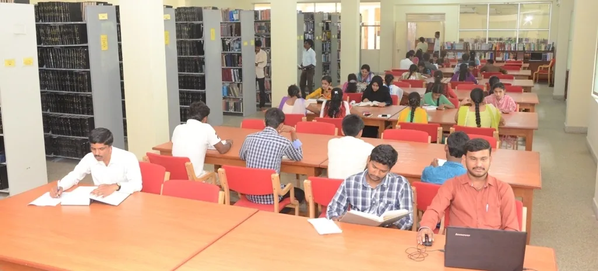
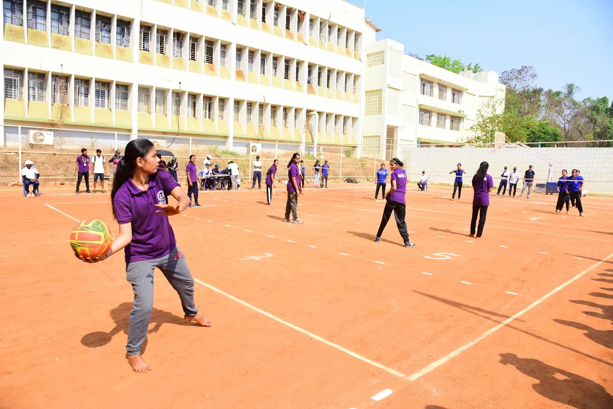
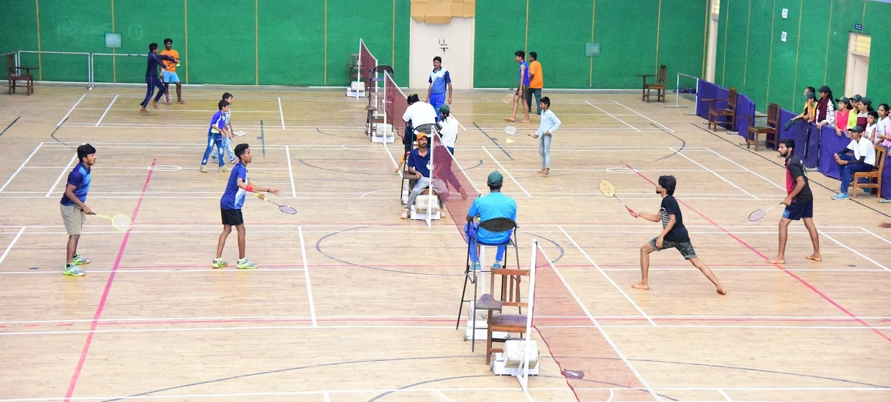
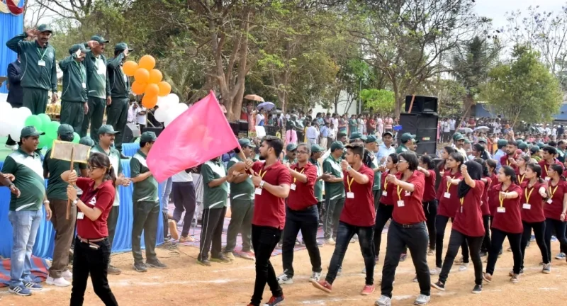
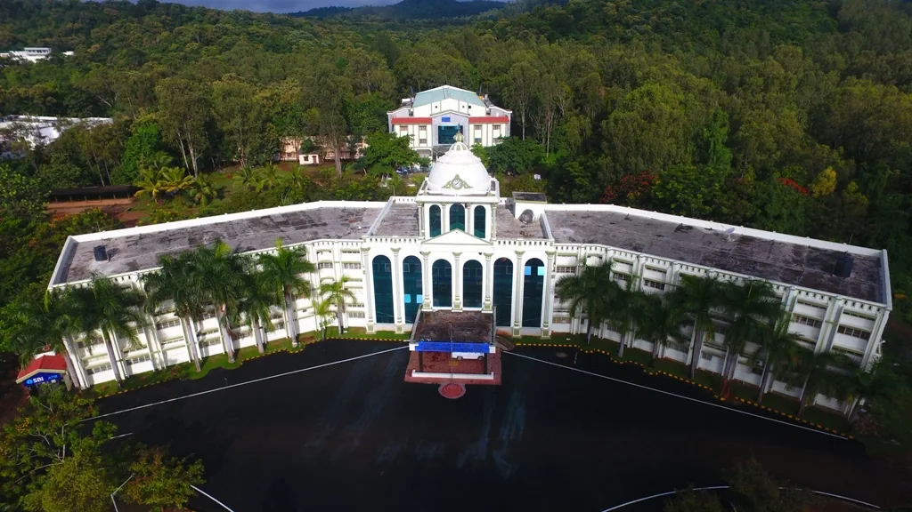
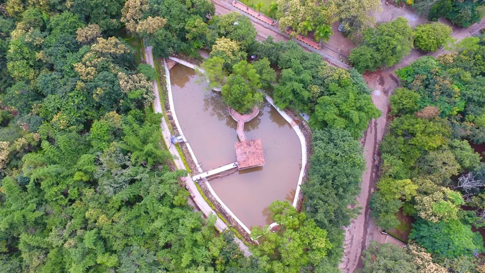

Find your direction
Discover subjects and departments before choosing your next step.
Explore academic areas →Your next chapter starts here
Explore what you love. Discover new possibilities. Begin your next chapter at Kuvempu University.

Make room for your ambition
Start with your interests. Explore the academic areas that could shape your next chapter.
Prototype subject explorer, based on the supplied navigation. Not a verified programme or admissions catalogue.
No matching academic areas. Try a different word or select another category.

Learning, together
Discover subjects, explore departments, and take your next step.
Discover subjects and departments before choosing your next step.
Explore academic areas →Find eligibility, fees, scholarships, and the documents you will need.
Fees & funding →Follow a clear application process with verified dates and guidance.
How to apply →
More than a place to study
Your university experience extends beyond the classroom. Explore the spaces, support, and everyday experiences that make a campus your own.



Follow your curiosity
Make research and opportunity part of the student journey—not a separate world.
Research & discovery
Explore departments, research interests, and opportunities to develop your own questions.
Explore research →Your future
A dedicated space for careers guidance, skills development, and verified student opportunities.
Careers & opportunities →Editorial direction: future versions will feature real student voices, projects, and opportunities. No testimonials or outcome statistics have been invented for this concept.
What’s on
Explore talks, workshops, and campus life. The events below are fictional demonstrations—not actual university announcements.
Loading demonstration events…
Stay in the know
Clear notices. Visible deadlines. No scrolling announcements.
Admissions · sample content slot
Examinations · sample content slot
Funding · sample content slot
This concept brings study, discovery, and community into one clear student experience. The university’s approved introduction, history, and institutional details will be added during content review.

